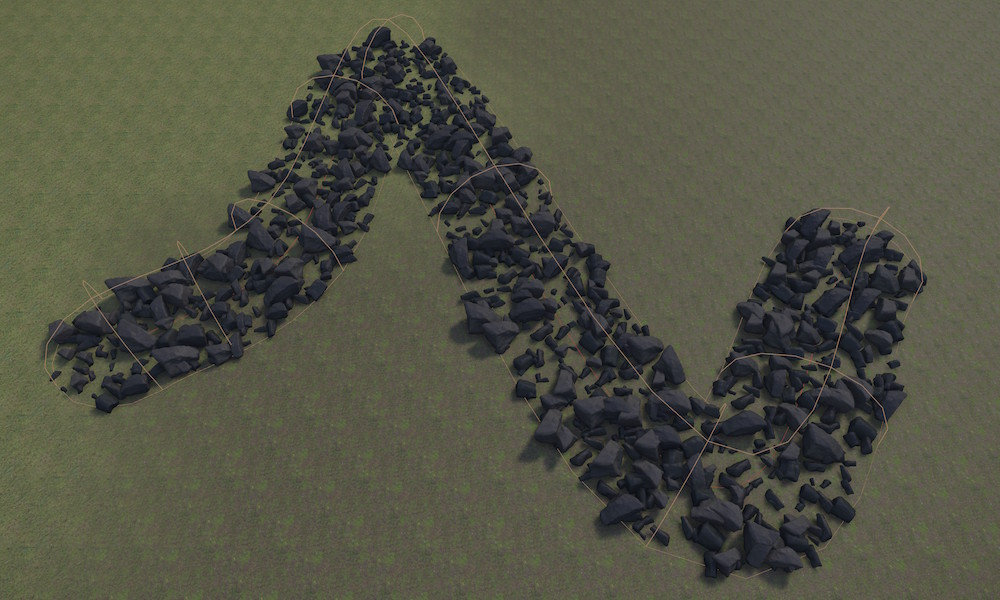

Procedural Volume Spline Component
The procedural volume spline component defines a tube-shaped volume along a spline in which the rules of ProcGen graphs are modified. Not every graph has to make use of this information, and what the exact effect is, is up to the ProcGen graph.
For more details see the chapter on ProcGen graph modifier nodes.

Spline volumes are useful for creating paths, roads, rivers, or other linear features through procedurally generated terrain. The volume follows the spline curve with a configurable radius and falloff.
Setup
The procedural volume spline component must be on the same game object as a spline component. The spline defines the path that the volume follows, while this component controls the volume's radius, value, and blending properties.
- Create a game object with a spline component and configure the spline shape.
- Add a Procedural Volume Spline Component to the same game object.
- Set the
Radiusto control how wide the influence area is around the spline. - Configure the
Value,BlendMode, and other properties as needed. - Add the appropriate tag to the game object so that it can be picked up by modifier nodes in the ProcGen graph.
Component Properties
Value: A single number value. This is combined with the InputValue from the modifier node in the graph, using theBlendModeformula.SortOrder: If multiple modifier volumes overlap, theSortOrdercan be used to control in which order the volumes are evaluated.BlendMode: How to combineValuewith the InputValue from the modifier node in the graph. The Set mode just sets the result toValueand ignores the other operand.Radius: The radius around the spline centerline in which the modifier is active. Points within this distance from the spline curve are affected by the volume.FadeOutStart: The influence of the volume can fade out towards its edges, for smooth transitions. This value controls where the fade out starts relative to the radius. A value of zero means fade out starts immediately at the spline centerline, while a value of one means no fade out (influence stops abruptly at the radius boundary).